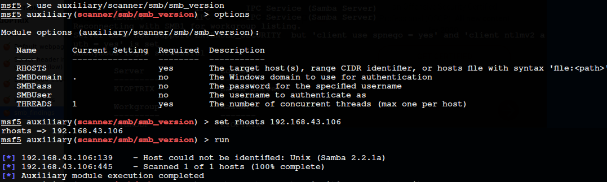

KIOPTRIX
netdiscover ---pcsnessus
nmap -T4 -p- 192.168.1.2
nmap -A -T4 -p22,80,111,139,443,32768 192.168.1.2
open port 80,443 high concern
nikto
dirbuster
/usr/share/wordlists/dirbuster/directory-list-lowercase-2.3-small.txt
mention files..php,sql,txt,tar,.....imp ones
curl --head 192.168.43.106
nmap --script=ssl-enum-ciphers -p 443 192.168.43.106
searchsploit apache 1.3.20
smbclient -L \\\\192.168.43.106
smbclient -L \\\\192.168.43.106\\IPC$ or ADMIN$
